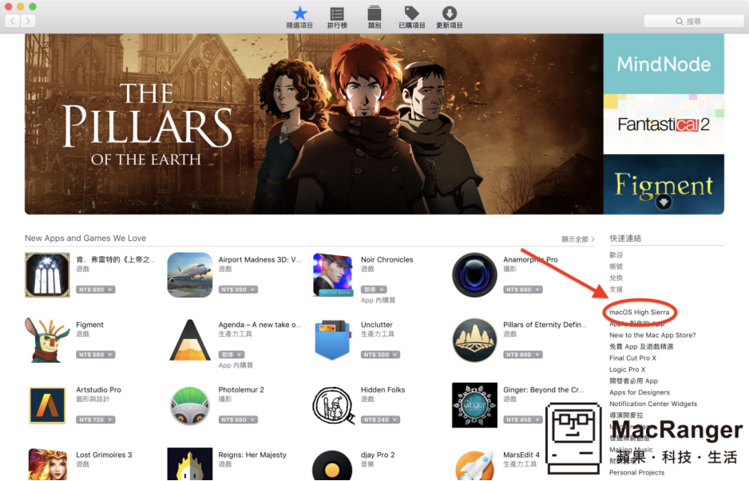
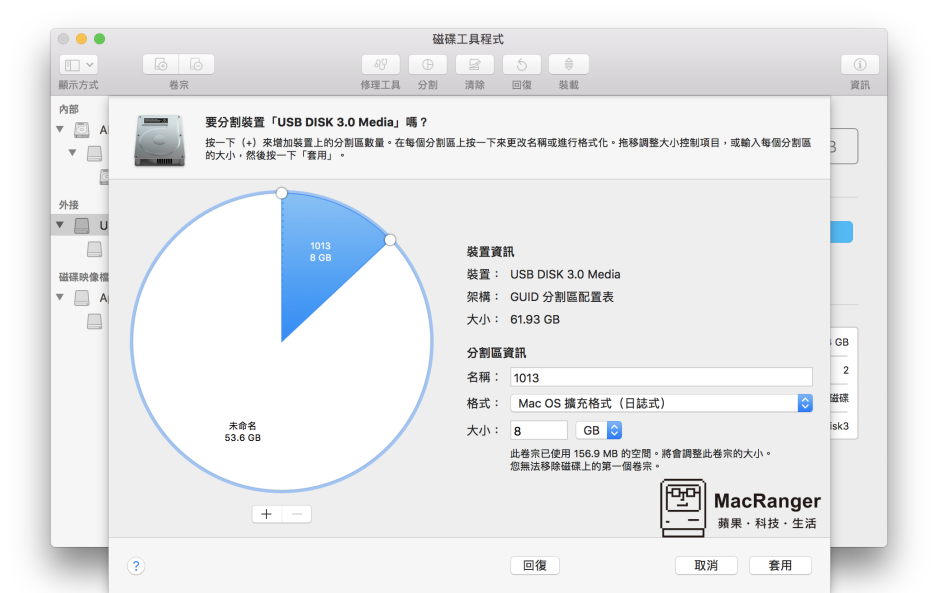
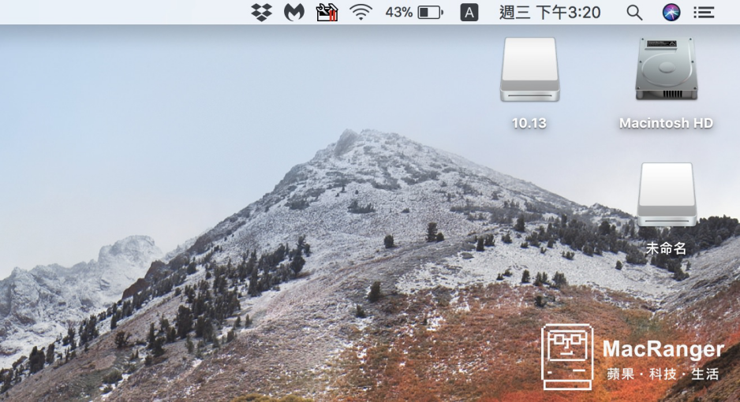
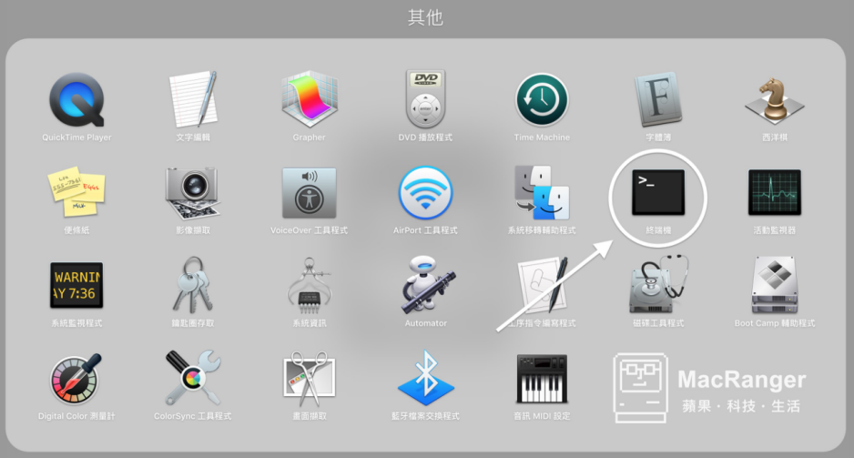
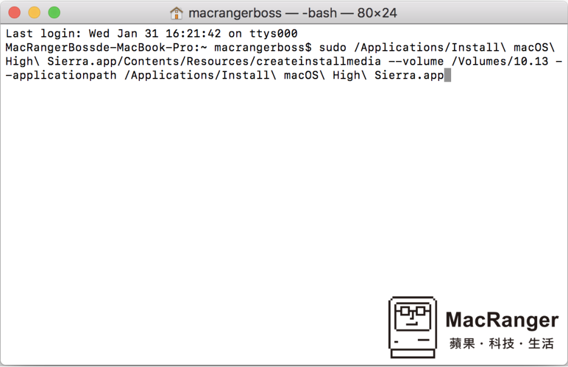
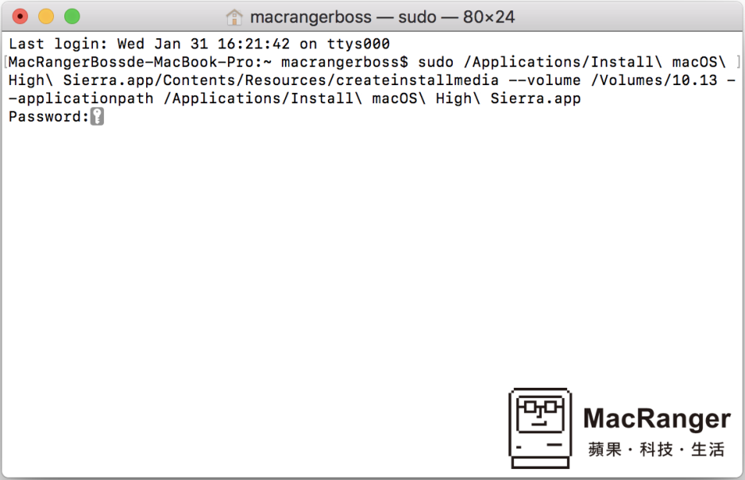
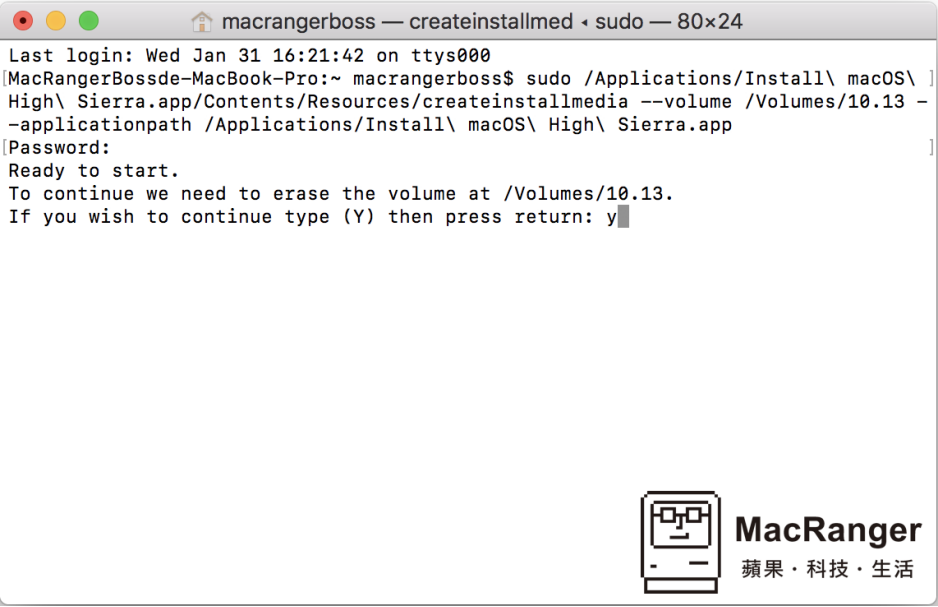
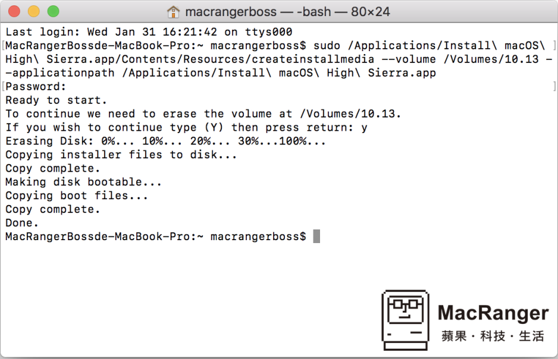

�u作MAC 系�y�P
2018年10月17日 星期三
下午8:48
https://macranger.com/macos-high-sierra-usb/
· 使用���w：�K端�C
· 作�I�h境：10.13 macOS High Sierra
· 操作�y度：低
· 功能介�B：系�y重灌需要用到，初步�z查���X磁碟���}的工具。
· 其他需求：USB-C / USB 3.0 的�S身碟，容量 16 GB 以上即可。
下�d最新的 macOS 作�I系�y

▲首先到 Mac App Store 首��的�冗��邳c�糇��I系�y名�Q。
▲在左上角的位置�c�粝螺d（如果已��是最新系�y的��是可以�c�粝螺d）。
�S身碟分割格式化及命名

▲�S身碟的格式分割教�W在以下�B�Y有�����f明，但在最新的作�I系�y中名�Q是�o法��入符��「.」的。

▲所以�u作完��得手�痈�改一下磁碟名�Q�椤�10.13」。
系�y�S身碟 �u作�_始

▲今天要用到的��用程式是在「其他」�e�^的「�K端�C」。

▲打�_�K端�C後，�⑾路椒椿业闹噶钛}�u�N上至�K端�C程式��面，接著按下「return」�I。
sudo /Applications/Install\ macOS\ High\ Sierra.app/Contents/Resources/createinstallmedia --volume /Volumes/10.13 --applicationpath /Applications/Install\ macOS\ High\ Sierra.app

▲接著��入「使用者密�a」。

▲跳出�_�J��息，��按下「y」，接著「return」�I�^�m。

▲接著可能就要稍等一段�r�g（看�S身碟的存取速度），看到�@����面就代表完成了。
���Y
相信大家��在�q豫想�f有�]有必要�u作系�y�S身碟�@部分，其��就以正常的重灌方法，我��可以到重灌磁�^去下�d作�I程式�磉M行整��重灌的流程，但�@�^程�L�U非常的大，最主要的原因就是吃�W路下�d，以及��理�r�g��真的�^�L，所以才��延伸出用外部系�y�S身碟的方式�磉M行重灌�@���幼鳎�除了�p少安�b�r�g外，也大大的降低安�b�^程中��遇到的所有���}，站�L在�@��真的建�h不妨可以�u作一��，不麻��，且可以省下未�碓S多作�I上的流程。